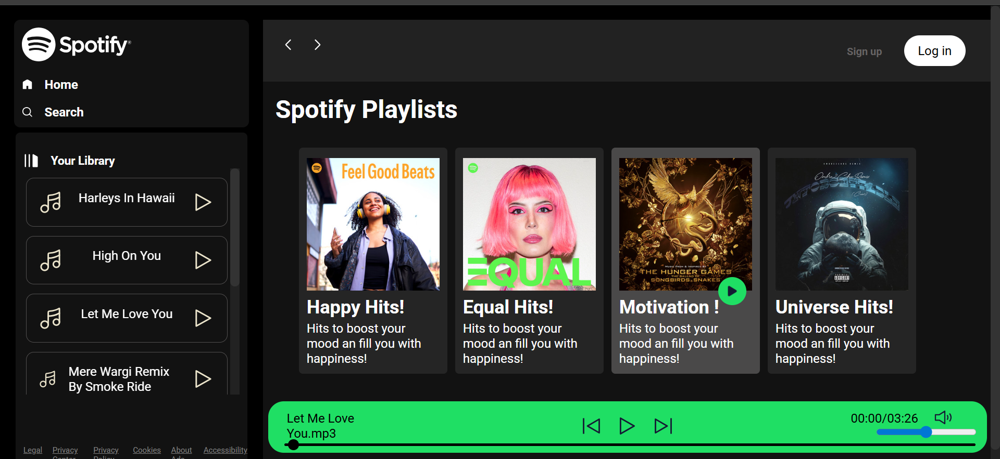
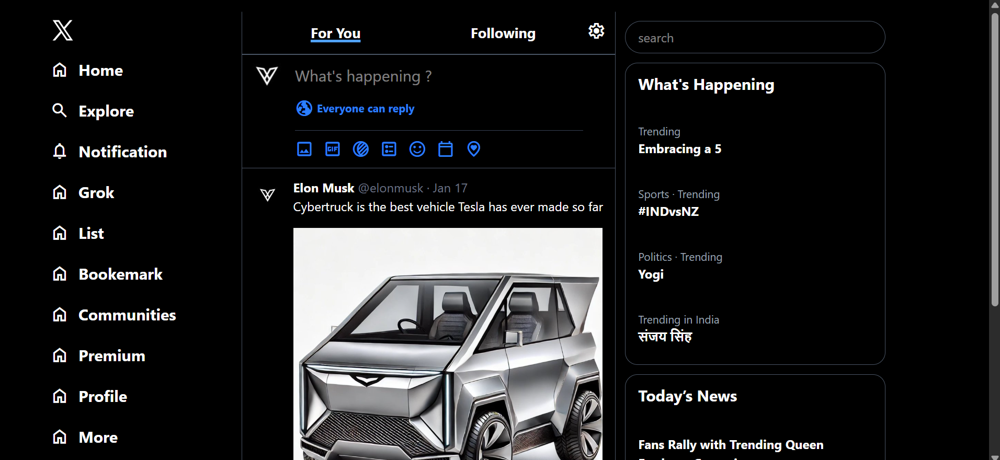

Projects

Spotify Clone
Designed backend services with routes, controllers and database interactions.In which music can be played and uploaded

X (Twitter) Clone
Built a responsive frontend using modern layout and UI design techniques..

QR Code Generator
A beautiful, feature-rich QR code generator with customization options. Perfect for business cards, marketing materials, and digital campaigns.